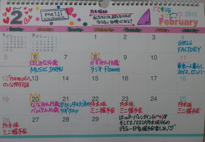
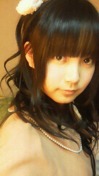

扇風機の風にあたりたーい!
28℃の部屋で贅沢なこと言ってみたよ∩^ω^∩ふふふ
ひめたんカレンダーおまたせいたしました!２月ゆーて今日は７日だけれども。
よかったら使ってあげて下さい(^O^)/

１月より２月のほうが予定たくさんで嬉しいな。
予定かくペンが３色になってパワーアップしたしょ？
握手会だって。テレビラジオ出演だって。ありがたい!
いつもありがとうございますです。日々感謝ですね♪
ちなみに、「２月」ってとこの横のスペースは、畠中画伯がステキな絵を
書いてくださいました。拍手!
今日はあっしゅっしゅ（齋藤飛鳥chan）とお泊まりしたときのお話。
あしゅが「お昼寝しすぎた寝れないー(>_<)」って言って
ひめたんが「お昼寝しすぎた寝れないー(>_<)」って言って
こりゃ２人でオールするしか!ってなりました。
あしゅ若いから(*^_^*)
いやそれが本気でほんっきで寝れなくて!
電気切って、お布団いい感じにセットして、お部屋ぬくぬくして、
寝るには最高の環境を作ったはずだったんぢゃけどねー。
不思議なくらい眠れなかったの('・ω・`)何でだろー。
...お昼寝しすぎたからだよね。ふふふ
それでねっ
結局5:30とかに２人とも寝ちゃったんぢゃけどね、
お互いビックリするくらい話が弾むのよ!
６時間も話が途切れないって。
(・o・ノ)ノ
うんでねー、どんな会話をしたかというとねー...
どんな会話したっけ。あれ？何話したっけあしゅー？
ってくらい他愛ない感じだった(`・ω・')!
いいんです楽しいから♪
あしゅのこと好きだったけどねー、
もっと好きになった
あしゅありがとーう。日の出を見る前に寝ちゃってごめんねっ
今日も乃木充(o>ω<o)!
ちょっと前のコメんとも一緒にー！！
 ひめたんブログだああ
ひめたんブログだああ
めっちゃ楽しみにしとったんよ？しってた？
ほんまにー？
知らんかった(・∀・)!嬉しい!ありがとうですー!!!
ひめたんがブログ書くの楽しみにしとったのは知っとったー？
東京の高校かな？
ぴんぽーん♪♪
秋に説明会行ってからずっと憧れとった高校です(^^)/
新生活は東京だよね？
いえすっ!!!
高校入ってなんかしたいことあるん？
高校生になったらやりたい事とか目標とかある？
ステキな女子高生なる!
お勉強も出来て、可愛いくて、乃木坂でも活躍してる子になれるって
かっこいいぢゃないですかー(o>ω<o)!
理想像であるメンバーには毎日会えちゃうから、頑張ろって思いますいつも。
実はね忘れない限りブログ開設から毎日メンバー全員の記事にコメしてるんだけど…
知ってた？
ひめたん毎回コメントチェックしとるくらいんよー∩^ω^∩♪
ひめたんはサッカーに興味あるのかな？
ルールとかよくわからんけど、スポーツ見るのは好き(*^^*)
あの、お散歩って大体何分くらいするんですか？？
４時間(・∀・)どや!
５回お風呂に入って４時間お散歩する15歳、
世界に２人もいないと思いますよー。
ここんとこ仕事忙しくて満足にコメ出来ないよ～( ；∀；)
短めでもいいかな？
読んでくださるだけで嬉しいですー。
短いコメントも嬉しい。
嬉しいっ(o>ω<o)!
ひめたんの好きな花はなんですか？
さくら(。・ω・。)/
お花はみんな好きだけど、さくらは本当に好き。
ユリとかも好き。
やばい!春なくなっちゃだめだよ春!
好きで好きで好きすぎるんですけど（笑）、ずっと好きでいてもいいですか？
好きですねー(*/ω＼*)
そんなひめきゅんのみなさんが、ひめたんも好きで好きで好きすぎるです。
ずっと好きでいてください!
もうちょっとひき画像無いの？ 家に飾りたいんだけど（笑）
ひき画...。
携帯フォルダん中探せばあるかもだけど、
恥ずかしいからやめておきます(*^^*)
確かに、
へばなっ(・∀・)ノ
ほしみなちゃん14歳お誕生日おめでとーう＼(^ω^)／★
そうだよね。ほしみなちゃん（星野みなみchan）可愛いよね。
「あんねーみなみねー」の物真似も乃木メンのあいだで流行ってるよ♪
ほしみなちゃんはひめたんに抱きついて、かずみん（高山一実chan）に自慢するの。
「かずみん見てー♪みなみ、ひめたんにぎゅーってしちゃった(*/ω＼*)」って。
きゃー可愛いねー!
かずみんも「きゃー!」ってなってたよ。うん
あーそうそうカレンダー!
今日広島に送ったんだけど、届く前にほしみなちゃん誕生日来ちゃった。
ごめんなさい('・ω・`)
それで今はせいたん（畠中清羅chan）なうー!
せいたん家にいるよ(^ω^)詳しくは
せいたんブログ
をみてねっ
せいたんの今日の日記は、どうやらひめたんづくしらしいです。
納豆は美味しいんだって。
本人いわく食わず嫌いなものがいっぱいあるせいたんだけど、
納豆はほんとに美味しいんだって。
そういやうちの家族も、ぱぱ・まま・すうは納豆好きなんだよなー。
みなさん納豆好きですか('・ω・`)？
お肌には良いのかな。ひめたんも今度挑戦しよっかなーどうしよっかな。
と思いつつ勇気ないない♪
あとはねー、梅干しも食わず嫌い。
ふふふー(ω)
ごめんねみんな。いつかまとめて食べてみるから許してね。
んあ!
会社でお手紙 受け取りました(`・・)ゝ
受け取りました(`・・)ゝ
みなさん本当にありがとうございました!
ひめたん最近みなさんにお会いする機会があんまなくて寂しかったけど
元気いっぱいもらったよ(*^_^*)
また今度みなさんと会える日を楽しみにしつつ、いろいろ頑張ろって思った。
本当にありがとうございました!
あのーmosってそういう意味でしたっけ？
ちがうような...
うわー調べたら、昨日の説明肝心なとこ足りてなかった!
Ｍ…Mountain(山のように気高く堂々と)
Ｏ…Ocean(海のように深く広い心で)
Ｓ…Sunのように(太陽のように燃え尽きることのない情熱を持って)
出典:Wikipedia
いやーしかしモスバーガー様かっこよすぎでしょ!
こりゃ明日のお昼はモスバーガー行くしかー♪
あげたピンクの熊ちゃん今どうなってるのかな(^O^)？
相変わらず元気で、いつもひめたんにぱわーをくれるよ(*^_ ’)
この子かわいいんだからもーう。
...と言いつつ、身につけてたらさすがに黒くなってきた。
洗濯機入れちゃおうかな。ぐるぐるくまさん。ぐるクマ!
ひめたんのパッツンがかわいすぎて爆発しそうです
爆発してもいいですか？
爆発するほどの写真ではないとひめたんは思いますけれどもー...。
爆発しちゃって下さい(^O^)/ひめたんが撃ってあげましょか？
ばきゅ ん
ん
柿ピーと言えば、柿の種とピーナツの比率は6:4らしいですよ
知ってたかな～。多分合ってると思います↑(笑
は、初めて聞いた!
あー柿の種辛いって思ったとき、いい感じにピーナッツありますよね。
深いなー。
ひめたん「ヒートショック」には気を付けましょう←知っとる？
ヒートショック...。
んー初めて聞いた(ω)
こりゃ調べてみるしか!
あぁ、早く寝ないと
東京ビッグサイトに行かなければ←どこに行くでしょ～？
何？東京ビッグサイトで何があったんですか？
教えて下さいっ!
季節で「春」が好きって書いてましたけど、「春」がなくなったらどうしますか？
誕生日来ないから、一生15歳だ＼(∀)／
それアリかもしれない♪
いやでもよく考えたら、お花見も、入学式卒業式も、ぐるカーの個別握手会もなくなるじゃん!
何より春色のワンピース着れないじゃん(^^;
やっぱナシかもしれない!
わさび味の柿ピーもあるけどひめたんは食べれるん？笑っ
食べたことないけど、美味しそーう!
ひめたんわさびのチューブは食べきらんけど、
わさび味のお菓子は食べきるー(^^)
はい大分弁使ってみましたっ
ひめたんは、手紙書くとき気を付けてる事とかってある？
ひめたんの手紙はいつも支離滅裂です(o>ω<o)
それでも、読む人を幸せにさせる自信だけは底なしにある♪
ひめたん当分はぱっつんで行くの？
その予定であります(`・・)ゝ
ひめたん、オススメの温泉なんてある？
温泉ねー。
ひめたんが教えてほしいです。どこかオススメの温泉とかありますか？
ちなみにせいたんに、大分は温泉いいよーってすすめてもらったかな。
５回もお風呂入ったらふにゃふにゃになっちゃうじゃん!
by さゆにゃん（井上小百合chan）(。・ω・。)ノ
ひめたん
モスバーガーってあるじゃないですか。
何で「ＭＯＳ」バーガーかみなさん知ってますかー？
Ｍ…Mountain(山)
Ｏ…Ocean(海)
Ｓ…Sun(太陽)
(`・ω・)どや!
はい。ひめたんですー♪
卒業式の日に地元のみんなにあげるお手紙を書いてたら
なんだか寂しくなってきた('・ω・`)←
まだ早い。まだ早いまだはやいよー。
昨日のお風呂の続きじゃないけど、最近はお散歩にもハマってるです♪
健康的でステキでしょ？
てかみんなの個人PVのダイジェスト盤、気になるような終わり方してるけれども
いくちゃん（生田絵梨花chan）のPVなんかまさにそれ!
「じゃあ、物真似やります。まずはーアントニオ猪木さん。」
ぶち。
('・ω・`)
ひめたんは思わずPVに突っ込んだよ。たいみんぐ!
質問いつもありがとーうございます!!!
放送部に帰っちゃダメ～!!乃木坂放送部作ればいいんじゃない？
乃木坂放送部(・∀・)!
面白そうぢゃねー♪是非あみあみ（能條愛未chan）には入ってもらいないねー。
勧誘してみよっかね。うん。
えーと、過去のブログにコメントしてもいい？
それとも最新のブログに過去の記事のコメントしたほうがいい？
どっちでも嬉しい(*^^*)
のでおまかせしますありがとーうございますです♪
44℃のお湯に30分も浸かってのぼせなかったの？
毎回半のぼせ状態ー。
なのでさすがに、あいだにクールダウンを入れました＼(^^)／
あと換気扇も回したらだいぶ楽♪
成長しましたしょー？
ひめたんは『さばドル』は観てる？
日によるー('・ω・`)
お仕事がある日は基本早く寝ちゃって、ああー見逃したってなる...。
何にもない日はばっちり観てます!!!
ひめたんは、学校とお仕事どっちが楽しいんですか？
違う楽しさがありますよね事実(ｗ)♪
学校仲間とお仕事仲間ってなんか違うけど
どっちの存在も大事だし、みんなといると落ち着くし。
海外旅行に行くなら何処に行きたいかな？？
こりあ(・∀・)/
握手会でもちょっとだけPerfumeの話してもいいかな？
ちょっとと言わずたっぷりPerfumeさんトークしましょうー♪
あー楽しみ楽しみ∩^ω^∩
あんね違うんよ聞いて
44℃のお湯は体にもお肌にも良くないよ
41℃くらいのお湯に肩までゆっくり浸かるといいよ
そうなんですかー!？
やっぱり41℃にしよっかなどうしよっかなー。
よし。今から41℃のお湯に肩まで浸かってくる(`・・)ゝ
柿ピーは好きですか？
好き。
まさに甘辛ミックス!
最近、チョコ柿ピーってあるじゃないですか？
あれは、なお好き(*^^*)
あれ？今日の日記はなんか短い気がするのはひめたんだけー？

ひめたん
ひめたん今日はねー、
５回もお風呂に入ったの。
...。
「うん。で？」
こう言うしかだよねー。
ひめたんはたまに唐突な始まり方で、しかも突っ込み所のない話をするんだって
みんなが言ってたよ(・∀・)
こんな時は「ふ～ん」って返してくれたら、
(あ。聞いてくれてるんだな^^)
ってひめたんが勝手に勘違いして長々と話しだすからね。
／
ふーん。
＼
あんね違うんよ聞いて!
何でかって言うとね、最近ひめたんお風呂に入るのにハマってからねー
44℃のお湯に肩まで浸かって、６曲歌い切るまで立ち上がらんのんよ。
これ意外とハードでから、立ち上がったら時に汗だーってなるのが気持ちいいんよ。
でもねたまにね、クラーってなるからね、みなさんには真似しないでほしいな。
てか何で６曲だと思うー？
それはね何でかって言うとねー...(。・ω・。)/
ひめたんトーク再現。
メンバーのみんながこの日記呼んだら、うなずいてくれると思う(ω)
「あんね違うんよ聞いて!」
誰にも否定されてないのに、ひめたんの話は大抵このセリフで始まるの。
あっちなみに何で６曲歌うかって言うと、「約５分×６曲＝約30分」(`・ω・)どや
はいー誰も疑問に思わなかったよねー。
そーゆーの空気読まずに自由にお話しするのがひめたんだからねお許しを。
駅構内で地まわりしたのをかずみん（高山一実chan）に目撃されたのはここだけの話で。
違うの聞いて!これには理由があってー
...いやひめたんの手振りなしで、書いて説明したところで伝わる自信がない('・・`)
かずみんにだけあとでこっそり説明しておきますー♪
みゅみゅ（若月佑美chan)いわく、ひめたんの携帯には
ひめたんっぽい顔文字しかないらしい。
このブログ見てる中に同じ機種の人だれかいないかな。その人には伝わるんだよなおそらくな。
あー節分ぢゃん!
みなさん節分が2月3日って知ってましたかー？
らりん（永島聖羅chan）と２人で「そいえば節分て２日だっけ？３日？」って言って
携帯のカレンダー見たけど載ってなかったー。
今日か(*^^*)
質問返しっしー!
『日芽香→ひめたん』なのに『すず香→すずたん』じゃないのはなんでだろう？
逆に『すず香→すぅ』なのに『日芽香→ひぃ』じゃないのはなんでだろう？
それはずばり名付け親が違うからでしょう(〇-〇)/
↑某人気アニメの学級委員長の真似です伝わるカナ？
ひめたんって付けたのはすうで、
すうって付けたのは...。
あれ？誰だ？すうってあだ名いっちゃん初めに付けたの誰ー？
節分だね。メンバー同士で豆まきしたりしないの？
豆まきしたいー♪
けどスタジオのお掃除が大変なことになりそうなので遠慮しとこっかな。
ひめたんは楽しみは最後にとっておく方？それとも先に楽しむ方？
何だかんだで最後(*^_^*)!
はい、重要な事なのでもう1度書きます
スケートのやつ何て言ったか教えてwww
↑しつこい？
答えるまで書き続けるし
↑うざい？
でも気にしない
しつこくないしうざくないけどむしろ気になってくれるのはめっちゃ嬉しいけど
やっぱり恥ずかしいから言わない(*/ω＼*)うん
あのセリフは下北FMオンエア終了とともに封印したんだからお願い掘り出さないでー!!!
PVのダイジェスト盤みたよ!
ひめたんのオススメは誰のPV？
みんな可愛かったーけど個人的に
ななみん（橋本奈々未chan）のPVにハマりすぎたー!!!
可愛かったで賞はさゆにゃん（井上小百合chan）かな(*ymy*)
囲みにいこまっち（生駒里奈chan）のPVの「いこまりな!」の物真似したら
似てるーって評判でーした。
日芽香サンプラーはどこに行けば買えますか？ｗ
日芽香サンプラーは恥ずかしいので、世の中に出回らないよう
これもまた封印しました。
わら
ひめたんのあれさぁ、商品化しちゃえば？？？
えーそんなー(>_<)
売れ残りすぎてひめたんが買い取るはめになるのが目に見えてるからー。
メンバーはＣＤ貰うんだろうけど、ひめたんは自分でも買いますか？
もう、予約とかしましたか？
もらえるもんなんですかね？自分では買う気でいるんだけどね
ままーもう予約したー？
ちなみにひめたんの個人PVが入っているのはCD+DVD盤Type-A
今、東京駅の京葉ストリートで【八天堂】（広島みはら）の、
クリームパンを買いました。会社で食べます。
ここ、有名なお店ですか？
広島人ほど広島みやげに疎いって言いますからねー
ごめんなさいひめたんの知識不足です('・ω・`)
そっかーこの前東京駅で、広島みやげの看板があったのは
そのクリームパンだったのかー。
よし。買うしか!
ひめたんって料理できたり、お菓子作れたり女子力高いの？(=^ェ^=)
料理・お菓子作り・お裁縫...。
できないなりにどうにか頑張るのがひめたんです♪
なんちゃって女子力(`・ω・)どや
いまからでも、ひめたんにはまっちゃっていいとも？？
いいともどころか
めっちゃ嬉しいともー(o>ω<o)!!!
ひめたんの好きな男性の体型は？
細身、細マッチョ、マッチョ、その他でよろしく！
ひめたん体型も顔もぶっちゃけ気にしない人だからなーあ。
あえて言うならお姫様だっこできそうな、細マッチョ・まっちょ!
日芽香ちゃんが前に載せた手作りカレンダーの２月度のってありませんか？？
カレンダー広島のお家に飾られてるんですよー。
急いで送ってもらって仕上げますね
ほしみなちゃん(星野みなみchan)の誕生日までには完成させますので
しばしお待ちをー(＾ロ＾;
ちゃんと使ってもらえてて嬉しい！
ひめたんはPerfumeの３人なら誰推しですか？ちなみに僕はかしゆかです。
３人とも素敵すぎて好きすぎて
１人に絞ってると熱が出そうです('・ω・`)
かしゆかさんかわいいですよねー♪
love the world のかしゆかさんが歌う大サビが好きすぎる!
なんかあの企画は画期的だね
監督さんのイメージから出来た映像なのかな？？？
それともメンバーが提案したのかな？？？
ある程度ふわっとした企画書が来て、
個々のキャラクターとかオリジナリティーとかセンスなんか交えながら、
監督さんとメンバーが意見を出し合いながら作りました。
原本と全く違う内容になったって子もちらほら...。
よし最後に
ひめたんの個人PVのダイジェスト盤を見たまいまい（深川麻衣chan）がひとこと。
「えーここで切るのー？
このあとからがめっちゃひめたんなのにー。」
(。・ω・。)
最近「ω」の口してる顔文字に愛着がわいてきた。
ひめたん
{kind=link}
{kind=link}
{kind=link}
{kind=link}
{kind=link}
{kind=link}
{kind=link}
{kind=link}
{kind=link}
{kind=link}
{kind=link}
{kind=link}